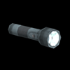

教室で使用できるアイテム：

懐中電灯
ジェイクの充電式懐中電灯は、ゲーム開始時から使用可能で、使うために何かを集める必要もありません。懐中電灯は、部屋を照らして光源やアイテムを探すのに使います。ジェイクは彼の前だけを懐中電灯で照らしますので、ジェイクが歩く道としては使用できません。懐中電灯は数分使用すると電池切れになりますが、縦方向に2秒ほどシェイクすると充電できます。
 パチンコ
パチンコ
パチンコは窓を割ったり、遠くにある光源を破壊するために使います。パチンコはゲーム開始時からありますが、使用するにはまずパチンコの弾を集めねばなりません。集めた弾は、弾を見つけた部屋でのみ使用できます。
 パチンコ弾箱
パチンコ弾箱
パチンコ弾の箱を集めるごとに、プレイヤーの所持品にパチンコ弾が1つ追加されます。
 かんしゃく玉
かんしゃく玉
かんしゃく玉は部屋のどこへでも投げられます。当たると閃光を発し、近くのオブジェクトを破壊します。後半のステージでは、破壊可能なオブジェクトが窓際にあることがあります。オブジェクトに当てないように、よく狙って投げましょう。
 テレビのリモコン
テレビのリモコン
テレビのリモコンは、部屋にあるテレビをすべて操作できます。リモコンを装備してAボタンを押すと、操作するテレビの切り替えや、すべてのテレビを消すなどのアクションを行います。むろん、破壊されたテレビは操作できません。
 発炎筒
発炎筒
発炎筒をジェイクの前に落として、他の光源への橋をかけられます。Aボタンを押してWiiリモコンを水平に振ると、発炎筒を使用できます。発炎筒が落ちると、再び集めたり使用することはできません。発炎筒は短い間燃え上がり、その後フェードアウトして消えます。